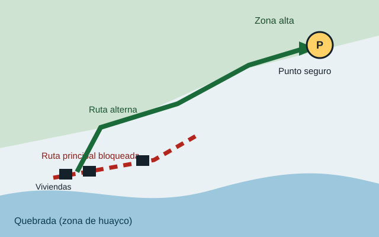

1. Entiende tu riesgo
Elige tu nivel de amenaza y lee qué hacer ahora.
Ir al orientadorEvacuación por huaycos sin internet
VÍA MESH propone una red local entre celulares (sin internet) para avisar el nivel de riesgo, mostrar la ruta segura y reportar quién ya evacuó.
Probar el orientador Ver video y guíaPrototipo académico en HTML y CSS. No envía alertas reales.

Un recorrido en tres pasos
Elige tu nivel de amenaza y lee qué hacer ahora.
Ir al orientadorMira el esquema con la ruta bloqueada y la ruta alterna hacia la zona alta.
Ver la rutaIndica si estás a salvo o necesitas apoyo para que el líder lo sepa.
Hacer un reporteHU-001 · Orientador de riesgo
Elige una opción y lee la indicación correspondiente.
Simulación: el nivel no se detecta ni se envía a nadie. La elección tampoco pasa al formulario de reporte.

Ruta de evacuación
La ruta principal, junto a la quebrada, es la primera en bloquearse. La ruta alterna sube hacia el punto seguro en la zona alta.
En la red mesh, esta indicación llegaría a los celulares cercanos aunque no haya señal.
HU-003 · Mochila de emergencia
Marca lo que ya tienes listo. El avance se actualiza al instante.
Simulación: las marcas no se guardan. Al recargar la página la lista se reinicia.
HU-002 · Reporte de estado
Marca si estás a salvo o necesitas apoyo. Así se reemplaza la lista en papel por un reporte rápido.
Simulación: no se guarda ni se transmite nada. No ingreses datos personales reales.
HU46 · Autoridades
Consulta los eventos reportados en la red local. Exporta la bitácora cuando recuperes la conexión para tu reporte posterior.